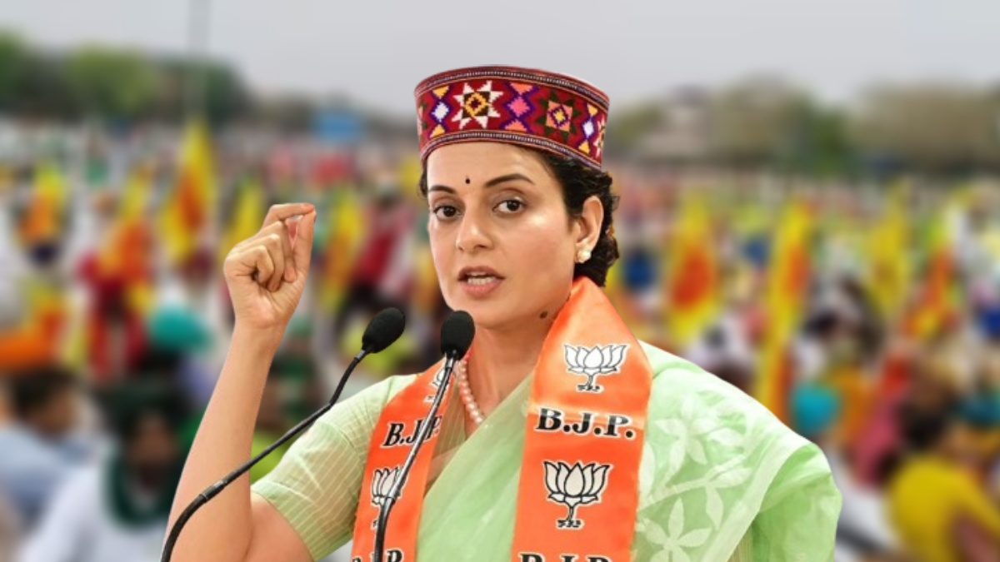

Kangana Ranaut Calls Politics an ‘Expensive Hobby’, Says MP Salary Isn’t Enough
Written By: Rishabh Sinha | Published: October 13, 2025 – 7:24 PM IST

Actor-turned-politician Kangana Ranaut, now serving as Member of Parliament from Mandi, described her political journey as financially demanding—calling it “a very expensive hobby.”
“If you are an MP you can't have it as a profession... you need a job,” she said in an interview with Times Now. Ranaut explained that the salary of ₹50,000–₹60,000 left after deductions is insufficient to cover the costs of travel, staff, and constituency visits.
“If I have to go to my constituency with some representation, some PAs from here, some three-four cars, the expenses are in lakhs because one place from other is 300-400 kms minimum,” she added.
She cited examples of other MPs who maintain parallel careers, such as lawyers and business owners, and mentioned that even artists like Javed Akhtar continued their professional work while in politics.
Speaking on a podcast on the YouTube channel Atman in Ravi (AIR), Ranaut said she’s still adjusting to the role and wouldn’t say she’s enjoying it yet. “It’s more like social service,” she said, noting that politics was never her background.
She also shared how constituents often approach her with local issues like broken drains and roads, which are typically state government matters. “They say, ‘You have money, you use your own money,’” she remarked.
Despite the challenges, Ranaut continues to engage with her constituency and learn the ropes of her new role in public service.
← Back to Home
|